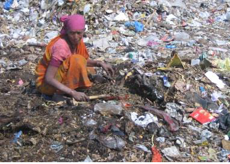
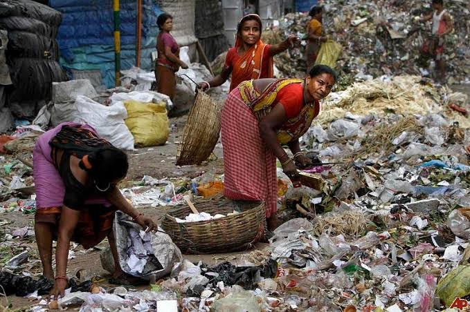
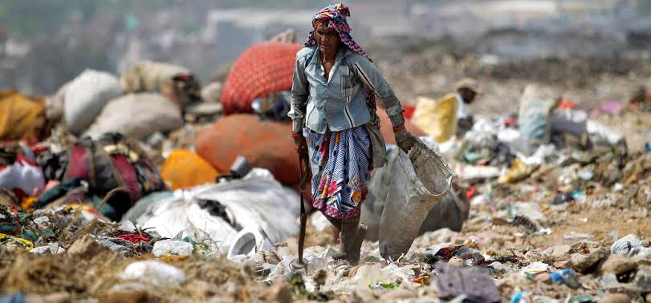
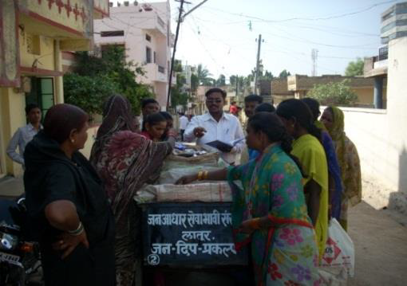
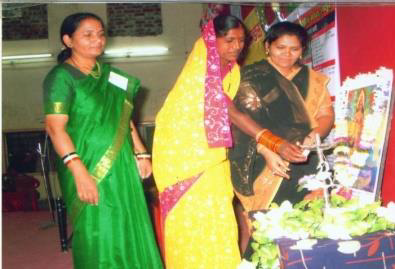

why we are here !!!!
Jan-adhar sevabhavi sanstha has pledged to improve the socio-economic status of the rag pickers by involving them into management, supervision and ground level waste collection and processing. Jan-adhar sansth have established a state of art process for collection, segregation, processing of MSW (Municipal Waste Mangement) so that JAN-ADHAR SEVABHAVI SANSTHA Shyam Kunj, shyam Nagar, ambajogai Road, latur. +91 8411 085848 / +91 9049 406333 janadharlaturss@gmail.com many national level organizations have awarded the work. So far more around 800 employment generation for economic year 2021-22. Whereas more than 3000 employment generation done so far throughout the working journey directly or indirectly. Collaboration with various national institutions and organizations with work experience of more than 18 years in MSW (Municipal Waste Mangement). The main strength of the organization comes from a thought that waste is not a problem but an opportunity to create pollution free environment for generations to come.
our wonderful journey
Jan-adhar sevabhavi sanstha has pledged to improve the socio-economic status of the rag pickers by involving them into management, supervision and ground level waste collection and processing. Jan-adhar sansth have established a state of art process for collection, segregation, processing of MSW (Municipal Waste Mangement) so that JAN-ADHAR SEVABHAVI SANSTHA Shyam Kunj, shyam Nagar, ambajogai Road, latur. +91 8411 085848 / +91 9049 406333 janadharlaturss@gmail.com many national level organizations have awarded the work. So far more around 800 employment generation for economic year 2021-22. Whereas more than 3000 employment generation done so far throughout the working journey directly or indirectly. Collaboration with various national institutions and organizations with work experience of more than 18 years in MSW (Municipal Waste Mangement). The main strength of the organization comes from a thought that waste is not a problem but an opportunity to create pollution free environment for generations to come.
vision & goal
We are committed to create strong and sustainable solution in overall waste management area where every stake holder enjoys equal opportunity, At source segregation – To make sure the waste to be handled properly it must be segregated into dry and wet at the source itself to avoid further contamination.
To establish sustainable waste management module and to improve the socio-economic status of the safai mitra’s, and Segregation at MRF centers – The primarily segregated waste the brought to MRF (Material recovery Facilities) for further segregation. At MRF’s the waste is then segregated into various parts majorly plastic, paper, MLP, Textile etc. This practice can generate around 30 different types of material for further processing.
We are committed to create strong and sustainable solution in overall waste management area where every stake holder enjoys equal opportunity, At source segregation – To make sure the waste to be handled properly it must be segregated into dry and wet at the source itself to avoid further contamination.
To establish sustainable waste management module and to improve the socio-economic status of the safai mitra’s, and Segregation at MRF centers – The primarily segregated waste the brought to MRF (Material recovery Facilities) for further segregation. At MRF’s the waste is then segregated into various parts majorly plastic, paper, MLP, Textile etc. This practice can generate around 30 different types of material for further processing.
mission
We JSS have been working in the field of waste management since establishment. We have dedicated our work to improve the educational, financial & social status of the deprived segment of the society by providing them every opportunity to work in the waste management area As MRF’s play a vital role into total Waste Movement activities it is important to increase their numbers to minimize the mistakes, overburden on system, to overcome errors etc. These MRF’s generate many jobs and are easy to install, maintain and operate. The model is scalable and provides sustainable solution to the entire waste management.To provide and achieve zero waste concept of the waste it is important to understand the complete ecology of the waste management. It consists of various activities as collection, transportation, segregation, processing etc. Application of various proper techniques at each stage will only improve the waste management a great business activity.
We JSS have been working in the field of waste management since establishment. We have dedicated our work to improve the educational, financial & social status of the deprived segment of the society by providing them every opportunity to work in the waste management area As MRF’s play a vital role into total Waste Movement activities it is important to increase their numbers to minimize the mistakes, overburden on system, to overcome errors etc. These MRF’s generate many jobs and are easy to install, maintain and operate. The model is scalable and provides sustainable solution to the entire waste management.To provide and achieve zero waste concept of the waste it is important to understand the complete ecology of the waste management. It consists of various activities as collection, transportation, segregation, processing etc. Application of various proper techniques at each stage will only improve the waste management a great business activity.




